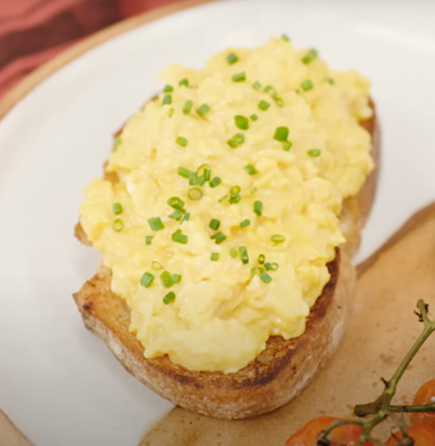
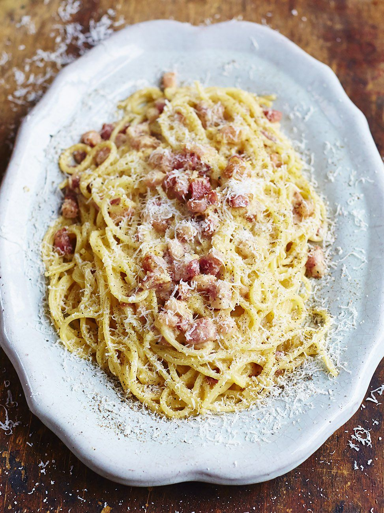
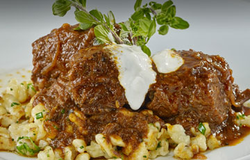

Gordon Ramsay's scrambled eggs
Ingredients:
- 6 cold eggs
- 15g butter
- Salt and pepper
- Crème fraîche
- Chives
Instructions:
- Crack 6 cold eggs into a deep saucepan.
- Add the butter. For smaller batches, use a 2-to-1 eggs-to-butter ratio.
- Put the pan on high heat.
- Stir continuously with a rubber spatula—don't whisk—making sure to scrape the bottom of
the pan.
- After 30 seconds, take the pan off the heat. Keep stirring. After about 10 seconds, put
back on the heat. Repeat for 3 minutes.
- In the last minute, season the eggs lightly. For extra creamy texture, stir in 1 tsp of
crème fraîche.
- Plate and garnish with chopped chives.
Back to the top of the recipe

Jamie Oliver's spaghetti carbonara
Ingredients:
- 85g spaghetti
- 3 egg yolks
- 1/2 cup grated Parmesan cheese
- 4 slices of pancetta diced
- 1 clove of garlic, minced
- 2 tbsp olive oil
- Salt and pepper
- A handful of fresh parsley, chopped
Instructions
- Bring a large pot of salted water to a boil and cook the spaghetti according to the
package instructions.
- In a small bowl, whisk together the egg yolks and Parmesan cheese. Set aside.
- In a large pan, cook the pancetta or bacon over medium heat until it is crispy. Add the
minced garlic and cook for another minute.
- Drain the spaghetti and add it to the pan with the pancetta and garlic. Toss to combine.
- Remove the pan from the heat and stir in the egg yolk and Parmesan mixture. Season with
salt and pepper.
- Serve the spaghetti carbonara with a sprinkle of fresh parsley on top.
Back to the top of the recipe

Wolfgang Puck's beef stroganoff
Ingredients:
- 1/2kg lb beef tenderloin, sliced into thin strips
- 1 tbsp olive oil
- 1 small onion, chopped
- 1 clove garlic, minced
- 1 cup beef broth
- 1/2 cup sour cream
- 2 tbsp tomato paste
- 2 tsp Dijon mustard
- 1 tsp Worcestershire sauce
- salt and pepper to taste
- 225g egg noodles, cooked according to package instructions
Instructions:
- Heat the olive oil in a large skillet over medium heat.
- Add the beef tenderloin strips and cook for 3-4 minutes, or until browned on all sides.
- Remove the beef from the skillet and set aside.
- In the same skillet, add the onion and garlic and cook for 2-3 minutes, or until the
onion is translucent.
- Add the beef broth, sour cream, tomato paste, Dijon mustard, and Worcestershire sauce to
the skillet and stir to combine.
- Return the beef to the skillet and simmer for 5-7 minutes, or until the sauce has
thickened and the beef is cooked through.
- Season with salt and pepper to taste.
- Serve the beef stroganoff over the cooked egg noodles.
Back to the top of the recipe